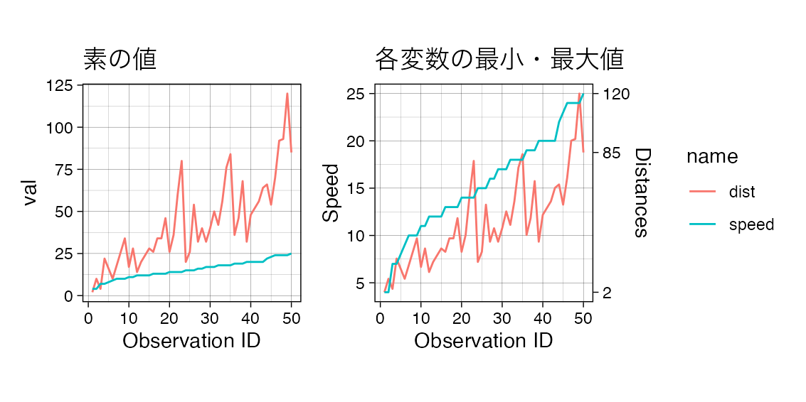
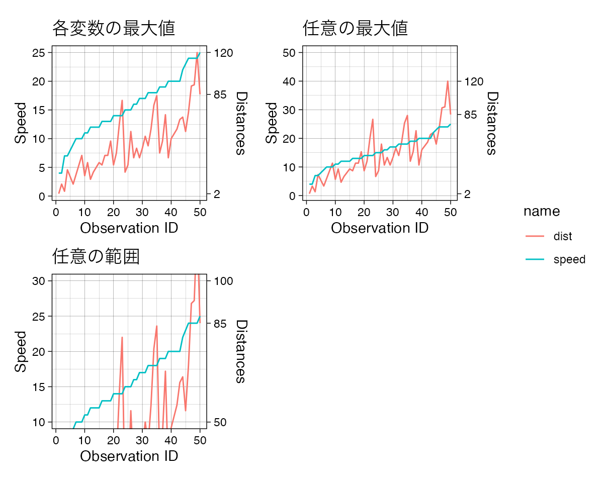
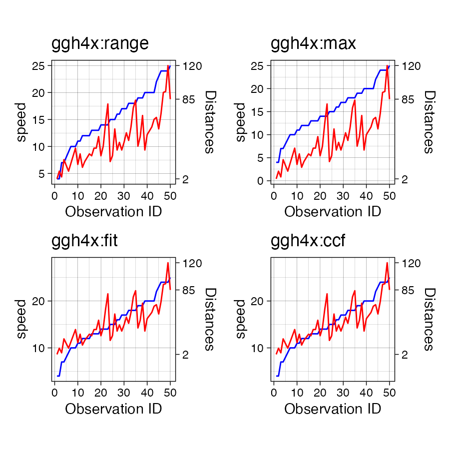

ggplot2
で2軸グラフの作図を行いたい時があります.sec_axis() が導入され,
cowplot 📦
などを使わなくても2軸グラフが描けるようになりました. ただ,
2軸グラフの描画にはクセがあり,
右軸に対してプロットしたい数値の変換と右軸目盛り数値の変換をユーザ側で
行う必要があります (下記の参考情報セクションも参照ください).frabento::va_resc() を作ってみました.
library(frabento) # このパッケージ
library(tidyverse) # ggplot2とtidyなデータハンドリング
library(patchwork) # ggplotを簡単, キレイにレイアウト
library(fontregisterer) # フォントの利用を楽にするため
library(ggtext) # element_markdown() を使うため
library(ggh4x) # Hacks for ggplot2目的 データセットcars (Speed and
Stopping Distances of Cars) を例に, 左軸にSpeed (変数名speed),
右軸にDistances (変数名dist) をプロットする.
theme_set(theme_linedraw(base_family = "Helvetica") + theme(aspect.ratio = 1/1))
# cars はこんな感じのデータ
head(cars, n = 3); tail(cars, n = 3)
#> speed dist
#> 1 4 2
#> 2 4 10
#> 3 7 4
#> speed dist
#> 48 24 93
#> 49 24 120
#> 50 25 85
# 【大事】各変数の範囲を知る
(lh <- range(cars$speed, na.rm = TRUE))
#> [1] 4 25
(rh <- range(cars$dist, na.rm = TRUE))
#> [1] 2 120
# 作図のためデータを変形
cars_longformat <- cars %>%
tibble::rownames_to_column(var = "ID") %>%
tidyr::pivot_longer(cols = -"ID", names_to = "name", values_to = "val")
# 比較用に素の値をプロット (1軸グラフ)
g0 <- cars_longformat %>%
ggplot(aes(x = as.integer(ID), y = val, group = name)) +
geom_line(aes(color = name)) +
labs(x = "Observation ID", title = "素の値")
# 2軸プロット
g1 <- cars_longformat %>%
# distの値を左軸に合わせてリスケール
dplyr::mutate(val_resc = if_else(name == "dist",
va_resc(val, lh_lim = lh, rh_lim = rh, "var"),
val)) %>%
ggplot(aes(x = as.integer(ID), y = val_resc, group = name)) +
geom_line(aes(color = name)) +
scale_y_continuous(name = "Speed",
# 右軸の目盛り数値をリスケール
sec.axis = sec_axis(~ va_resc(., lh, rh, "axis"),
breaks = c(2, 85, 120), # 確認用
name = "Distances")) +
labs(x = "Observation ID", title = "各変数の最小・最大値")
# patchwork
g0 + g1 + plot_layout(ncol = 2, guides = "collect")
最大値 (基本的に正値を想定) または最小値
(基本的に負値を想定) のみの指定もできます. この場合,
もう一方の値は自動的に 0 となります.
また, 任意の範囲指定も可能です.
# 各変数の最大値
(lhmax <- max(lh))
#> [1] 25
(rhmax <- max(rh))
#> [1] 120
g2 <- cars_longformat %>%
dplyr::mutate(val_resc = if_else(name == "dist",
va_resc(val, lhmax, rhmax, "var"),
val)) %>%
ggplot(aes(x = as.integer(ID), y = val_resc, group = name)) +
geom_line(aes(color = name)) +
scale_y_continuous(name = "Speed",
sec.axis = sec_axis(~ va_resc(., lhmax, rhmax, "axis"),
breaks = c(2, 85, 120), # 確認用
name = "Distances")) +
labs(x = "Observation ID", title = "各変数の最大値")
# 任意の最大値
lhmax_arb <- 50
rhmax_arb <- 150
g3 <- cars_longformat %>%
dplyr::mutate(val_resc = if_else(name == "dist",
va_resc(val, lhmax_arb, rhmax_arb, "var"),
val)) %>%
ggplot(aes(x = as.integer(ID), y = val_resc, group = name)) +
geom_line(aes(color = name)) +
scale_y_continuous(name = "Speed",
sec.axis = sec_axis(~ va_resc(., lhmax_arb, rhmax_arb, "axis"),
breaks = c(2, 85, 120), # 確認用
name = "Distances")) +
labs(x = "Observation ID", title = "任意の最大値") +
coord_cartesian(ylim = c(NA, lhmax_arb))
# 任意の範囲
lh_arb <- c(10, 30)
rh_arb <- c(50, 100)
g4 <- cars_longformat %>%
dplyr::mutate(val_resc = if_else(name == "dist",
va_resc(val, lh_arb, rh_arb, "var"),
val)) %>%
ggplot(aes(x = as.integer(ID), y = val_resc, group = name)) +
geom_line(aes(color = name)) +
scale_y_continuous(name = "Speed",
sec.axis = sec_axis(~ va_resc(., lh_arb, rh_arb, "axis"),
breaks = c(rh_arb, 85), # 確認用
name = "Distances")) +
labs(x = "Observation ID", title = "任意の範囲") +
coord_cartesian(ylim = lh_arb)
# patchwork
g2 + g3 + g4 + plot_layout(ncol = 2, guides = "collect", byrow = TRUE)
【注目】 ggh4xが別の解法を実装しています.
geom_*()を重ねて使う必要があるみたいなので,
用途に応じて使い分けるのが良さそうです.
# --> ggh4x::help_secondary()
# default = range
sec_range <- help_secondary(cars, speed, dist, method = "range",
name = "Distances", breaks = c(2, 85, 120)) # 確認用
gh1 <- cars %>%
tibble::rownames_to_column(var = "ID") %>%
ggplot(aes(x = as.integer(ID))) +
geom_line(aes(y = speed), colour = "blue") +
geom_line(aes(y = sec_range$proj(dist)), colour = "red") +
scale_y_continuous(sec.axis = sec_range) +
labs(x = "Observation ID", title = "ggh4x:range")
# max
sec_max <- help_secondary(cars, speed, dist, method = "max",
name = "Distances", breaks = c(2, 85, 120)) # 確認用
gh2 <- cars %>%
tibble::rownames_to_column(var = "ID") %>%
ggplot(aes(x = as.integer(ID))) +
geom_line(aes(y = speed), colour = "blue") +
geom_line(aes(y = sec_max$proj(dist)), colour = "red") +
scale_y_continuous(sec.axis = sec_max) +
labs(x = "Observation ID", title = "ggh4x:max")
# fit lm(primary ~ secondary)
sec_fit <- help_secondary(cars, speed, dist, method = "fit",
name = "Distances", breaks = c(2, 85, 120)) # 確認用
gh3 <- cars %>%
tibble::rownames_to_column(var = "ID") %>%
ggplot(aes(x = as.integer(ID))) +
geom_line(aes(y = speed), colour = "blue") +
geom_line(aes(y = sec_fit$proj(dist)), colour = "red") +
scale_y_continuous(sec.axis = sec_fit) +
labs(x = "Observation ID", title = "ggh4x:fit")
# ccf
sec_ccf <- help_secondary(cars, speed, dist, method = "ccf",
name = "Distances", breaks = c(2, 85, 120)) # 確認用
gh4 <- cars %>%
tibble::rownames_to_column(var = "ID") %>%
ggplot(aes(x = as.integer(ID))) +
geom_line(aes(y = speed), colour = "blue") +
geom_line(aes(y = sec_ccf$proj(dist)), colour = "red") +
scale_y_continuous(sec.axis = sec_ccf) +
labs(x = "Observation ID", title = "ggh4x:ccf")
# patchwork
gh1 + gh2 + gh3 + gh4 + plot_layout(ncol = 2, byrow = TRUE)